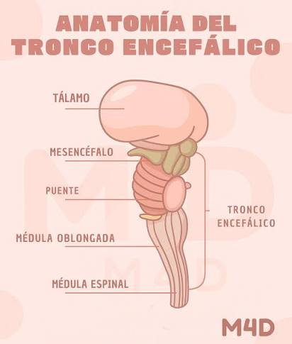

1. Generalidades y Funciones Vitales
El tronco encefálico es una estructura ubicada en la base del encéfalo que conecta las estructuras
subcorticales con la médula espinal. Facilita la comunicación entre el encéfalo, la médula espinal y el
cerebelo mediante la retransmisión de tractos neurales y alberga la mayoría de los núcleos de los nervios
craneales.
Se asocia con funciones autónomas y vitales como:
- Ciclo sueño-vigilia y conciencia.
- Control respiratorio y cardiovascular.
Está formado por tres porciones principales: bulbo raquídeo, puente y mesencéfalo.

2. Bulbo Raquídeo
Es la porción más inferior del tronco encefálico, situada en la fosa craneal posterior. Se continúa
inferiormente con la médula espinal y superiormente con el puente. Es responsable de funciones autónomas y
alberga los centros cardíaco, respiratorio, vasomotor y reflejo.
- Cara Anterior: Presenta la fisura media anterior, las pirámides bulbares (tractos
corticoespinales), las olivas (núcleos olivares inferiores) y el origen aparente de los nervios
hipogloso (XII par), glosofaríngeo (IX par) y vago (X par).
- Cara Posterior: Contiene el surco medio posterior, los fascículos y tubérculos cuneiforme y
grácil, el tubérculo trigeminal (núcleo espinal del nervio trigémino), el funículo lateral, la mitad
inferior de la fosa romboidal (piso del cuarto ventrículo) y el óbex.
- Irrigación Sanguínea: Aportada por las arterias cerebelares inferiores anterior y posterior, y
por la arteria espinal anterior.
3. Puente (Protuberancia de Varolio)
Es la porción media del tronco encefálico que une el bulbo raquídeo con el mesencéfalo. Sus funciones
principales abarcan el sueño, la respiración, la deglución, la audición, el control de la vejiga, el
equilibrio, el gusto y diversas funciones motoras.
- Cara Anterior: Tiene una apariencia estriada debido a las fibras corticopontocerebelosas
horizontales. Posee el surco basilar (que alberga la arteria basilar) y está delimitado por los surcos
pontopeduncular y bulbopontino.
- Nervios Craneales Emergentes: De su cara anterior salen los nervios trigémino (V par), abducens
(VI par), facial (VII par) y vestibulococlear (VIII par).
4. Clasificación de Fibras Nerviosas y Núcleos
Los nervios craneales aferentes y eferentes que conectan con el tronco encefálico se clasifican
funcionalmente según el tipo de impulso que transmiten:
- Especiales: Responsables de inervar los órganos de los sentidos especiales.
- Generales: Transmiten impulsos hacia o desde cualquier lugar, excepto los
sentidos especiales.
- Somáticos: Viajan hacia o desde la piel y los músculos esqueléticos.
- Viscerales: Llevan información relacionada con los órganos internos.
Nota: El tronco encefálico contiene además núcleos importantes asociados con funciones
parasimpáticas y simpáticas del sistema nervioso autónomo.
|